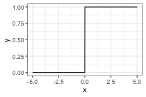
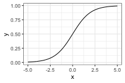
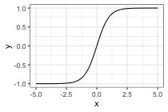
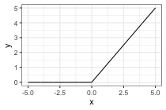
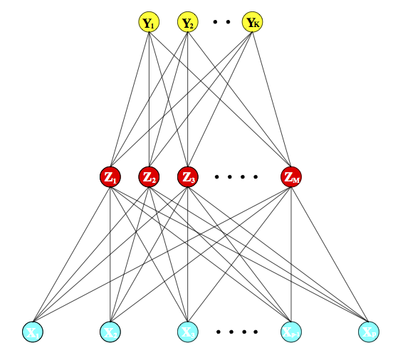
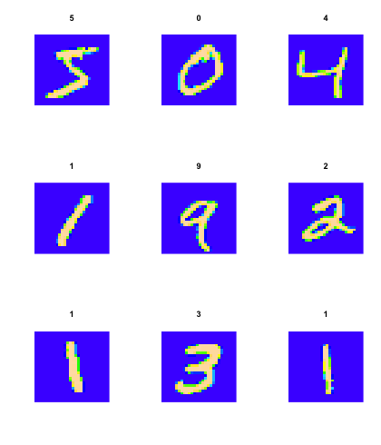
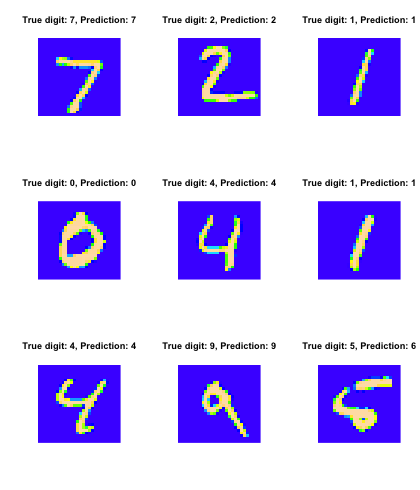
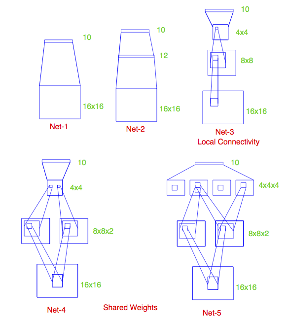

Neural nets/Deep learning
Today: What are neural nets, how are they fit, examples
Reading: Elements of Statistical Learning, Chapter 11.3-11.8
Review: The brain
Made up of neurons.
Neurons connected to each other.
Neuron takes input from some of its neighbors, when there is enough input it is “activated” and the neuron fires.
When the neuron fires, it sends the signal to its downstream neighbors, potentially causing them to activate and fire as well.
wikipedia’s illustration
Idea:
The brain somehow takes inputs and produces outputs (e.g. patterns of light on the retina to a classification of the objects in your field of vision, sensations in the periphery to a measure of temperature, etc.).
If we make a computational structure that mimics the brain, we can train it to make predictions from arbitrary sets of inputs.
This is just a fancy version of the regression or classification problem.
Neural networks
Neural networks are made up of units that are supposed to mimic neurons in the brain:

Input links: can be from other units or from the input data
Aggregation function: Linear combination of the inputs
Activation function: \(g\), usually a smooth, increasing function.
Output: \(a = g(\sum_i z_i \alpha_i)\), i.e., the activation function applied to the aggregated inputs.
Output links: Output \(a\) is sent to other units.
Activation functions:
- Initially: a step function

- sigmoid, \(\sigma(x) = \frac{1}{1 + \exp(-x)}\)

- tanh: \(\text{tanh}(x) = \frac{e^x - e^{-x}}{e^x + e^{-x}}\)

- relu: \(\text{relu}(x) = \text{max}(0, x)\) probably most common now.

Any non-linear activation function allows the net to go beyond linear functions of the input
Activation functions should be smooth for fitting purposes (gradient descent)
Neural net structures: putting the units together

Input layer
Hidden layer(s)
Output layer
Multiple hidden layers vs. one hidden layer
Special cases:
One hidden layer, one unit in that layer, sigmoid activation = logistic regression
Linear activation function = standard regression, parameterized in a strange way
Neural nets for regression
Notice that the net is just a fancy function of the inputs, parameterized by the weights. Therefore, we can choose the weights so that the net predicts a response, just like in linear regression.
Function we want to optimize: \[
R(\theta) = \sum_{i=1}^N R_i = \sum_{i=1}^N (y_i - f(x_i; \theta))^2
\]
\(\theta\) is the parameter vector we want to optimize over, containing the weights. We want to find \(\theta\) that minimizes \(R(\theta)\).
\(f(x_i; \theta)\) is the value computed by the net on an input point \(x_i\) with parameters \(\theta\)
Fitting is by “backpropagation”, which means gradient descent with the computations organized in a particularly convenient way.
Backpropagation derivation
Simple case:
One hidden layer with \(M\) hidden units.
Input variables \(x_i \in \mathbb R^p\), \(i = 1,\ldots, n\).
\(\theta\) is the set of weights \(\alpha_{m0} \in \mathbb R, \alpha_m \in \mathbb R^p, \beta_0 \in \mathbb R, \beta \in \mathbb R^M\).
Value of the \(m\)th hidden unit for the \(i\)th data point: \[
z_{im} = \sigma(\alpha_{m0} + \alpha_m^T x_i)
\] The vector containing the values for all the hidden units for sample \(i\) is \(z_i = (z_{i1}, z_{i2}, \ldots, z_{iM})\).
Value at the final layer is \[
f(x_i) = g(\beta_0 + \beta^T z_i)
\]
We want to find \(\theta\) to minimize \[
R(\theta) = \sum_{i=1}^N R_i = \sum_{i=1}^N (y_i - f(x_i; \theta))^2
\]
We fit by gradient descent, so we need derivatives of this function
Derivative for the weights connecting the hidden layer to the output layer for one sample: \[
\frac{\partial R_i}{\partial \beta_{m}} = \begin{cases}
-2(y_i - f(x_i)) g'(\beta_0 + \beta^T z_i) z_{im} & m = 1,\ldots, M \\
-2(y_i - f(x_i)) g'(\beta_0 + \beta^T z_i) & m = 0
\end{cases}
\]
Derivative for the weights connecting the input layer to the hidden layer for one sample: \[
\frac{\partial R_i}{\partial \alpha_{ml}} = \begin{cases}
-2(y_i - f(x_i)) g'(\beta_0 + \beta^T z_i) \beta_m\sigma'(\alpha_{m0} + \alpha_m^T x_i) x_{il} & l = 1, \ldots, p \\
-2(y_i - f(x_i)) g'(\beta_0 + \beta^T z_i) \beta_m\sigma'(\alpha_{m0} + \alpha_m^T x_i) & l = 0
\end{cases}
\]
Gradient descent update is then: \[
\begin{align*}
\beta_m^{(r+1)} = \beta_{m}^{(r)} - \gamma_r \sum_{i=1}^N \frac{\partial R_i}{\partial \beta_{m}^{(r)}}\\
\alpha_{ml}^{(r+1)} = \alpha_{ml}^{(r)} - \gamma_r \sum_{i=1}^N \frac{\partial R_i}{\partial \alpha_{ml}^{(r)}}
\end{align*}
\]
\(\gamma_r\) is referred to as the “learning rate”, we’ve seen it as the step size before.
Back-propagation equations, aka “what order do we do the computations in”?
Write \[
\begin{align*}
\frac{\partial R_i}{\partial \beta_{m}} &= \delta_{i} z_{im} \\
\frac{\partial R_i}{\partial \alpha_{ml}} &= s_{im} x_{il}
\end{align*}
\] so \[
\begin{align*}
\delta_i &= -2(y_i - f(x_i))g'(\beta_0 + \beta^T z_i) \\
s_{im} &= -2(y_i - f(x_i)) g'(\beta_0 + \beta^T z_i) \beta_m \sigma'(\alpha_{m0} + \alpha_m^T x_i)
\end{align*}
\] and \[
s_{im} = \sigma'(\alpha_{m0} + \alpha_m^T x_i) \beta_m \delta_i
\]
Back-propagation:
Step 1: Forward pass through the network to compute \(z_{im}\), \(f(x_i)\).
Step 2: “Propagate” errors back:
- Use \(f(x_i)\) and \(z_{im}\) to compute \(\delta_i\).
- Use \(\delta_i\) to compute \(s_{im}\).
Step 3: Compute gradients using \(z_{im}, \delta_i\), \(s_{im}\).
Interpretation: \(\delta_i\) and \(s_{im}\) are the “errors” from the current model on the output layer and the hidden layers, respectively.
Notes:
Backpropagation equations just rely on the chain rule
Can use any smooth activation function
Can use any architecture (more hidden layers, different kinds of connections between the layers, more than one output layer, etc.)
Applies to classification problems as well as regression problems
Issues with fitting:
Model is over-parameterized
Non-convex, many local optima, gradient descent will converge to just one
Many different strategies to deal with this. Often don’t actually want even an exact local optimum, many different “regularization” methods are used.
Example: zip code data

Goal: Given images representing digits, classify them correctly.
Input data, \(x_i\), are \(16 \times 16\) grayscale images, represented as vectors in \(\mathbb R^{256}\)
Responses \(y_i\) give the digit in the image.
Encode this as a classification problem, use neural nets with different architectures to fit
If you want to play with this in R
R package called keras
This is an interface to the python version of keras
Which is itself a frontend for a couple of lower-level packages (TensorFlow, CNTK, Theano)
Example: the same zip code data
## if you want to do this you'll have to install some the python version of keras first, which requires you to have TensorFlow, CNTK, or Theano installed as well
library(keras)
mnist = dataset_mnist()
x_train = mnist$train$x
y_train = mnist$train$y
y_train_matrix = to_categorical(y_train, num_classes = 10)
x_test = mnist$test$x
y_test = mnist$test$y
Let’s look at some of the images:
## function to rearrange things so that we can plot them
flip_image = function(x) {
n = nrow(x)
return(t(x[n:1,]))
}
par(mfrow = c(3,3))
for(i in 1:9) {
image(flip_image(x_train[i,,]), col = topo.colors(100), axes = FALSE,
main = y_train[i])
}

model = keras_model_sequential()
model %>%
layer_flatten(input_shape = c(28, 28)) %>%
layer_dense(units = 128, activation = 'relu') %>%
layer_dense(units = 10, activation = 'softmax')
model %>% compile(
optimizer = 'adam',
loss = loss_categorical_crossentropy,
metrics = 'accuracy'
)
model
## Model
## Model: "sequential_1"
## ________________________________________________________________________________
## Layer (type) Output Shape Param #
## ================================================================================
## flatten_1 (Flatten) (None, 784) 0
## ________________________________________________________________________________
## dense_2 (Dense) (None, 128) 100480
## ________________________________________________________________________________
## dense_3 (Dense) (None, 10) 1290
## ================================================================================
## Total params: 101,770
## Trainable params: 101,770
## Non-trainable params: 0
## ________________________________________________________________________________
## number of parameters for the first layer: each hidden unit has a weight associated with each of the 784 predictor units, plus a bias term
(784 + 1) * 128
## [1] 100480
## number of parameters for the second layer: each output unit has a weight associated with each of the 128 hidden units, plus a bias term
(128 + 1)* 10
## [1] 1290
Fit the model, look at the predictions:
model %>% fit(x = x_train, y = y_train_matrix, epochs = 15)
test_predictions = model %>% predict_classes(x_test)
par(mfrow = c(3,3))
for(i in 1:9) {
image(flip_image(x_test[i,,]), col = topo.colors(100), axes = FALSE,
main = sprintf("True digit: %i, Prediction: %i", y_test[i], test_predictions[i]))
}

More elaborate architectures do much better, for example the convolutional model.
Some net architectures

All cases: 10 output units, corresponding to the 10 possible digits.
Net 1: No hidden layer, equivalent to multinomial logistic regression
Net 2: One hidden layer, 12 hidden units. Each of the hidden units is connected to each of the 256 input variables and to each of the 10 output variables.
Net 3: Two hidden layers
First hidden layer: 64 hidden units arranged in an 8 x 8 grid. Each hidden unit is connected to a 3x3 patch of the input variables.
Secand hidden layer: 16 hidden units arranged in a 4 x 4 grid. Each hidden unit is connected to a 5 x 5 patch in the first hidden layer.
Net 4: Two hidden layers with weight sharing in the first layer.
First hidden layer: 128 hidden units, conceptualized as two 8 x 8 grids, each connected to a 3x3 patch of the input variables, similar to Net 3. Additional constraint that each of the units within the 8 x 8 feature map have the same set of 9 weights.
Second hidden layer: 16 hidden units arranged in a 4 x 4 grid, each connected to a 5 x 5 patch in each of the two 8 x 8 grids in the first hidden layer (so each hidden unit connected to 50 units in the first hidden layer).
Net 5: Two hidden layers with weight sharing in both layers:
First hidden layer: Same is in Net 4.
Second hidden layer: 64 hidden units arranged as four 4 x 4 grids. Each unit connected to a 5 x 5 patch of the fisrt hidden layer, and within each 4 x 4 grid, the weights connecting that unit to the previous input unit are the same.
Idea behind weight constraints: Each unit computes the same functional of the previous layer, so they are extracting the same features from different parts of the image. A net with this sort of weight sharing is referred to as a convolutional network.
Summing up
Deep learning = neural nets with more than one hidden layer. In practice, these work better than the single-hidden-layer networks.
Think of as predictors that can fit complex functions of the input variables
Also able to handle other kinds of output, e.g. sequences (natural language processing, machine translation)
Good when you have a lot of data, are interested solely in prediction
Not as good when you don’t have so much data or need an interpretation of the relationship between the predictors and response.
{kind=link}